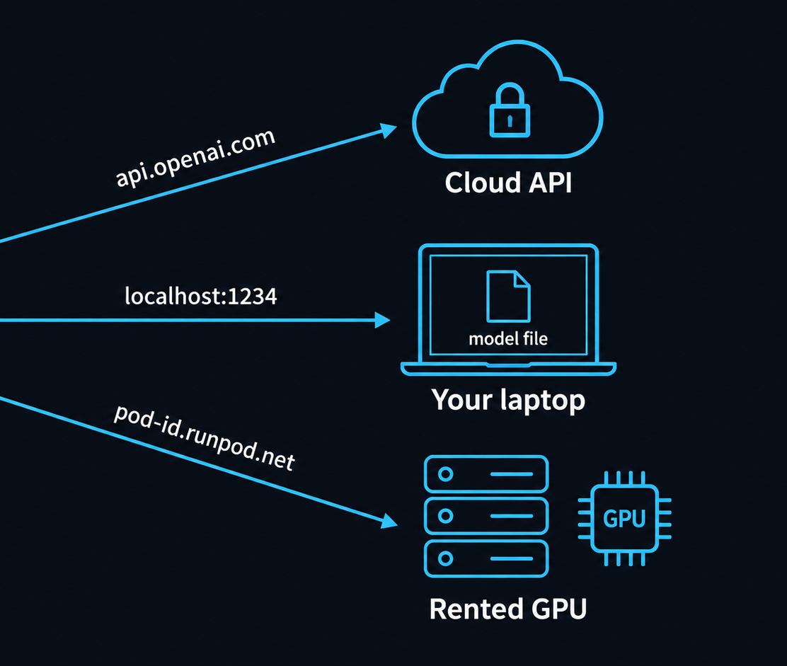
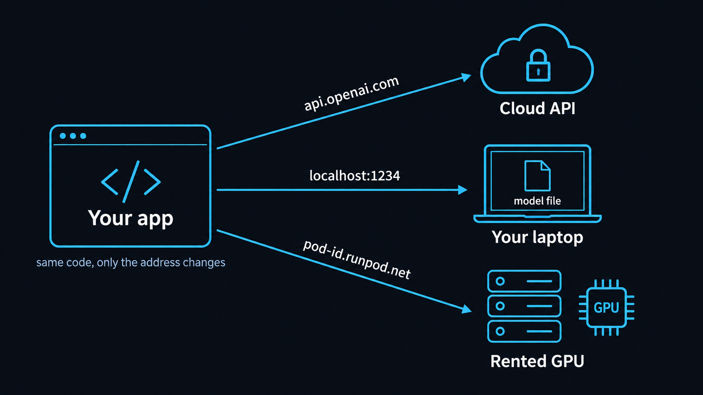
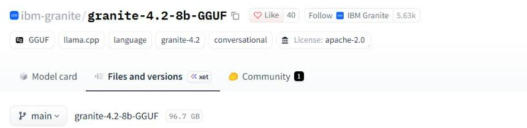
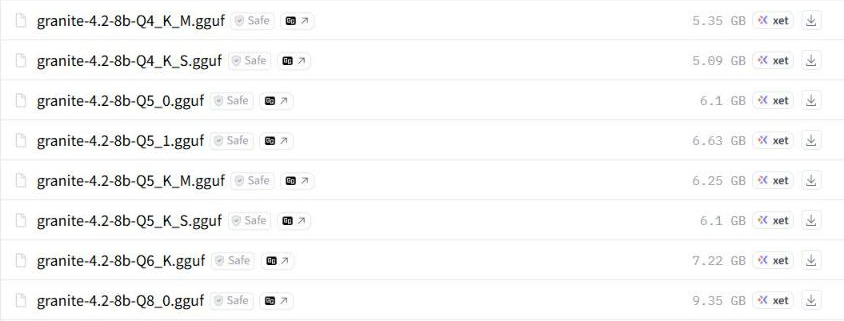
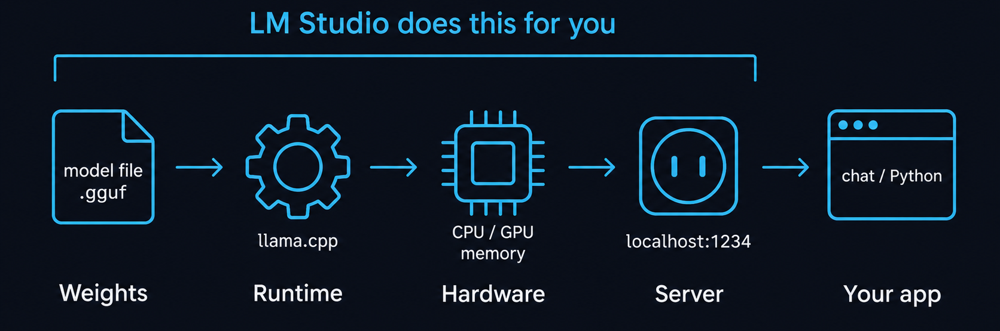
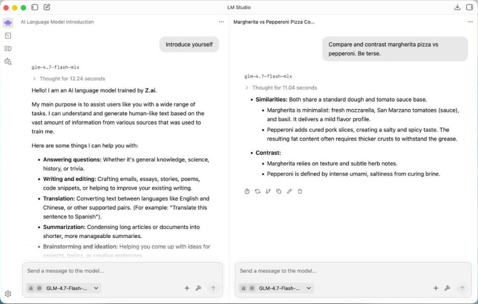
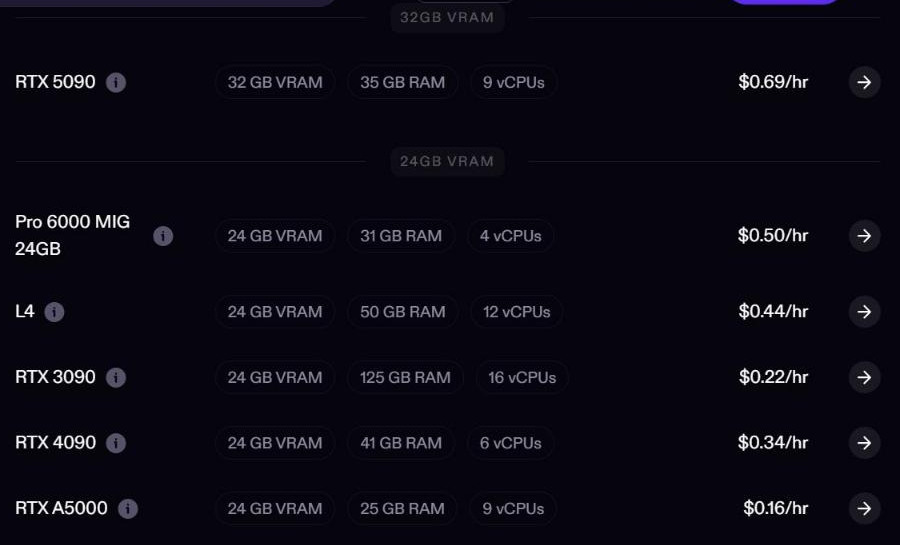

Открытые модели
Как запустить языковую модель на своём ноутбуке и на арендованной видеокарте
Hugging Face, LM Studio, Ollama, RunPod. Размер модели, память, скорость, цена. Данные на октябрь 2026.
⏱ 2 мин. Приветствие. До сих пор мы пользовались чужими моделями: ChatGPT, Gemini, Claude, ElevenLabs. Они живут в облаке, мы платим за подписку или за токены, а данные уходят к поставщику. Сегодня ставим модель к себе.
План: что такое открытая модель, что нужно компьютеру, LM Studio и локальный сервер, агент ставит модель за вас, рынок открытых моделей. После перерыва: когда ноутбука мало, аренда видеокарты в RunPod, цена, как выбрать, домашнее задание.
Одно приложение, три места, где работает модель

⏱ 4 мин. Слева приложение, например бот поддержки из прошлых уроков. Оно отправляет запрос модели. Первый вариант нам знаком: облачный API, адрес api.openai.com или Gemini API. Второй: та же задача, но модель лежит файлом на вашем ноутбуке, адрес localhost, то есть «этот компьютер». Третий: ваша модель на арендованной видеокарте в облаке RunPod.
Почему это важно. Многие локальные программы (LM Studio, Ollama) говорят на том же «языке», что и OpenAI API. Поэтому переход между тремя вариантами — это смена одной строки с адресом, а не переписывание приложения. К концу урока вы сможете осознанно выбрать один из трёх.
Вопрос в чат: какие данные вашей компании вы не стали бы отправлять в ChatGPT? Это и есть первый повод для локальной модели.
Открытая модель — это файл, который можно скачать, и лицензия к нему


⏱ 5 мин. Покажите страницу вживую, если есть время: huggingface.co, поиск «granite-4.2-8b-GGUF». Открытая модель — это прежде всего файлы весов: обученные числа, которые можно скачать и запустить у себя. ChatGPT так скачать нельзя, это закрытая модель.
Три вещи на странице. Первое: кто сделал. IBM, модель Granite 4.2 на 8 миллиардов параметров. Параметры — это те самые числа внутри модели; чем их больше, тем модель обычно умнее и тяжелее. Второе: лицензия. Apache-2.0 разрешает использовать в работе и в коммерческих продуктах, если сохранить текст лицензии. Третье: файлы. Одна и та же модель лежит в нескольких размерах: Q2, Q4, Q8. Это сжатие, разберём на слайде 6.
Формат GGUF — это файл модели для программ вроде LM Studio и Ollama: веса плюс описание модели в одном файле. Лицензии бывают разные. Apache-2.0 и MIT — свободные. У Llama 4 своя лицензия Meta с условиями и доступом по запросу. Правило: прочитали лицензию до того, как строить на модели продукт.
Своя модель: данные не уходят, но качество ниже лидеров
⏱ 4 мин. Честная картина. Плюсы своей модели: данные не уходят из компьютера, работает в самолёте и в закрытой сети, нет счёта за каждый запрос, и модель не изменится завтра без вашего ведома (у облачных моделей версии меняются).
Минусы: качество. Независимый рейтинг Artificial Analysis (индекс v4.3, октябрь 2026): лучшая закрытая модель Claude Opus 5.5 — 58 пунктов, лучшая открытая MiMo-V2.6-Pro — 46. Но MiMo огромная, на ноутбук не влезет. Открытая модель, которая помещается на одну игровую видеокарту, Qwen3.8 27B, — 34. Для простых задач этого хватает, для сложных рассуждений нет.
Вывод: локальная модель хороша для повторяющихся простых задач на чувствительных данных: классифицировать тикеты, вытащить поля из письма, сделать черновик. Для сложного оставляем облако.
Пять частей: файл, движок, железо, сервер, приложение

⏱ 4 мин. Когда мы пользуемся ChatGPT, всё спрятано. Локально видно пять частей. Файл модели: веса, формат GGUF. Движок: программа, которая умеет его выполнить; почти везде это llama.cpp. Железо: процессор, видеокарта и их память. Сервер: даёт модели адрес localhost:1234, чтобы к ней могли обращаться другие программы. И ваше приложение: окно чата или скрипт на Python.
LM Studio собирает первые четыре части в одну программу с кнопками. Ollama делает то же из командной строки. Зачем знать про части: когда что-то не работает, сразу понятно, где искать. Модель не загружается — файл не влезает в память. Отвечает медленно — считает процессор вместо видеокарты. Приложение получает ошибку — неправильный адрес или имя модели.
Сжатие (квантизация): та же модель в 2–5 раз меньше, чуть хуже качество
⏱ 5 мин. На Hugging Face мы видели много файлов одной модели. Буква Q и число — это квантизация, по-простому сжатие. Оригинал хранит каждое число модели в 16 битах: для Granite 8B это 17,6 ГБ. Если хранить каждое число грубее, в 8 битах, файл 9,4 ГБ; в 4 битах — 5,4 ГБ, втрое меньше оригинала.
Цена сжатия — качество. 8 бит почти неотличимы от оригинала. 4 бита — разумный компромисс, с него советует начинать и документация LM Studio. 2–3 бита заметно хуже: модель чаще путается. Буквы K_M в названии — вариант метода сжатия; для старта просто берите Q4_K_M.
Аналогия: фото в JPEG. При высоком качестве разницы не видно, при сильном сжатии появляются квадратики. Правило: берите самый крупный файл, который комфортно влезает в память, но не меньше Q4.
Файл модели плюс запас на разговор должен влезть в память видеокарты
⏱ 5 мин. Главный вопрос новичка: какая модель влезет в мой компьютер. Сплошная полоска — реальный размер файла в 4 битах, штриховка — запас 25% на контекст, то есть на историю разговора и вложенные документы. Вертикальные линии — память видеокарты (её называют VRAM): 6 ГБ у игровой видеокарты ноутбука (как RTX 3060 Laptop), 16 ГБ у видеокарты среднего класса, 24 ГБ у RTX 4090.
Читаем так: если полоска вместе со штриховкой левее линии, модель целиком влезает в эту видеокарту. 6 ГБ — модели до 4B. 16 ГБ — до 12B, а gpt-oss-20b впритык. 24 ГБ — до 27B. Если модель не влезает в видеокарту целиком, LM Studio положит часть в обычную память, но скорость упадёт в разы.
Ноутбук без видеокарты: модель хранится в обычной памяти, и 16 ГБ хватит даже для 8B, но процессор считает медленно (слайд 8). Поэтому без видеокарты берите 3–4B, Granite 3B или Qwen 4B. Начинайте с самой маленькой модели, которая решает задачу; «самая большая, что влезет» — не цель. LM Studio рекомендует от 16 ГБ памяти, а на Windows — от 4 ГБ видеопамяти; процессор с AVX2 на Windows обязателен.
Видеокарта отвечает в 2–25 раз быстрее процессора
⏱ 4 мин. Скорость меряют в токенах в секунду; токен — кусочек слова, как в L02. Данные из открытых замеров llama.cpp для модели на 7 миллиардов параметров в 4 битах; для 8B умножайте примерно на 0,7. Процессор ноутбука без видеокарты — порядка 5–15 токенов в секунду, это наша оценка: медленно, но для коротких ответов терпимо.
Игровой ноутбук с RTX 4050 — около 44, базовый Mac M4 — 24, топовый M4 Max — 83. Видеокарта RTX 4090 — 186, серверная H100 — 268; обе можно арендовать, это вторая часть урока. Человек читает примерно 4–7 токенов в секунду, поэтому от 20 и выше чат ощущается живым. Для пакетной обработки, например 10 000 писем за ночь, скорость важнее: там и пригодится аренда видеокарты.
Почему видеокарта быстрее: модель — это огромное число умножений, а видеокарта делает тысячи умножений одновременно и у неё очень быстрая память.
LM Studio: чат как ChatGPT, но модель работает у вас

⏱ 5 мин. LM Studio — бесплатное приложение для запуска открытых моделей на своём компьютере. Выглядит как ChatGPT: слева узкая панель разделов, в центре чат, под полем ввода выбор модели. Отличие: модель скачана на ваш диск и считает ваш процессор или видеокарта. На скриншоте сразу два разговора с моделью GLM-4.7-Flash.
Главные разделы. Chat — разговор. Discover — поиск моделей прямо из Hugging Face; LM Studio сам подсказывает, какие файлы влезут в вашу память. My Models — что уже скачано. Developer — локальный сервер, о нём через слайд. С июля 2025 LM Studio бесплатна и для работы в компании. Текущая версия 0.4.26 (октябрь 2026).
Не путайте: на странице загрузки lmstudio.ai сейчас первым предлагается LM Studio Bionic — это отдельный агент (вышел в июле 2026). Для урока нужна обычная LM Studio, ссылка ниже на странице загрузки. Альтернатива — Ollama, бесплатная, лицензия MIT; ей удобно управлять командами.
Демо: скачать маленькую модель и задать ей рабочий вопрос
Тикет: «Клиент не может сбросить пароль после смены телефона». Верни JSON: проблема, срочность (низкая/средняя/высокая), следующий шаг.
⏱ 5 мин. Живая демонстрация. До урока скачайте модель granite-4.2-3b в Q4_K_M (2,2 ГБ), чтобы не зависеть от интернета. Пять шагов: Discover, поиск по имени, кнопка Download у файла Q4_K_M, затем в Chat выбор модели в нижнем меню (она загружается в память за несколько секунд) и промпт.
Промпт рабочий, из L03: вытащить из тикета проблему, срочность и следующий шаг в JSON. Для показа можно выключить Wi-Fi перед отправкой: модель всё равно ответит. Покажите строку со скоростью под ответом (токены в секунду) и откройте диспетчер задач: видно, сколько памяти заняла модель.
Вопрос в чат: ответ хуже или лучше, чем у ChatGPT? Обычно маленькая модель справляется с такой простой задачей, но может перепутать формат. Это нормальная цена за 2 ГБ.
Включили сервер — и модель отвечает вашему коду, как облачный API
from openai import OpenAI
client = OpenAI(
base_url="http://localhost:1234/v1",
api_key="lm-studio") # для облака: ваш ключ
r = client.chat.completions.create(
model="granite-4.2-3b",
messages=[{"role": "user", "content": ticket}])
print(r.choices[0].message.content)https://api.openai.com/v1gpt-5.4-minihttp://localhost:1234/v1granite-4.2-3bhttp://localhost:11434/v1granite4.2:3blocalhost значит «этот компьютер».⏱ 5 мин. Самый важный слайд для тех, кто программирует. В LM Studio на вкладке Developer есть переключатель Start server. После этого модель доступна по адресу localhost:1234 и понимает те же запросы, что и OpenAI API: chat/completions, responses, embeddings. Также есть совместимость с API Anthropic.
Слева код из L03. Меняются две строки, выделены зелёным: адрес (base_url) и имя модели. Ключ для локального сервера не нужен, библиотека просто требует какую-то строку. Окончание /v1 в адресе — номер версии API, как у OpenAI; пишем как есть. У Ollama адрес другой, localhost:11434, но принцип тот же. Поэтому адрес и имя модели держим в настройках (файл .env), а не в коде: тогда переезд из облака на ноутбук или в RunPod — это правка одной строки.
Оговорка: «совместимый» не значит «одинаковый». Маленькая модель хуже следует формату JSON и может не поддерживать вызов инструментов. Проверяйте на своей задаче.
Агент разработки ставит модель за вас и сам меряет скорость
Установи на этот компьютер Ollama (официальный установщик с ollama.com) и запусти открытую модель granite4.2:3b. 1. Проверь видеокарту и её память, оперативную память и свободное место на диске. Скажи, какая модель подойдёт. 2. Скачай модель и задай ей вопрос: «Кратко: что такое квантизация?» 3. Замерь скорость (токенов в секунду) и сколько памяти заняла модель. 4. Покажи, по какому адресу работает локальный сервер, и пришли пример запроса на Python. 5. Ничего не открывай в сеть, сервер только на localhost.
ollama run granite4.2:3b.⏱ 4 мин. Связь с уроками про агентов разработки. Не обязательно ставить всё руками: Claude Code, Codex или Antigravity сделают это по такому промпту. Шаги нумерованы, чтобы агент ничего не пропустил, а пункт 5 запрещает открывать сервер в сеть.
Почему Ollama, а не LM Studio: в Ollama всё можно сделать командами (окно чата у неё тоже есть, но оно не обязательно), поэтому агенту проще. Это открытая программа с лицензией MIT; версия 0.40.5 от 14 октября 2026. Сервер Ollama работает на localhost:11434 и тоже понимает запросы в стиле OpenAI. У LM Studio для командной строки есть утилита lms, а для серверов без экрана — llmster.
Важно: агент будет предлагать команды установки. Читайте их перед подтверждением; ставим только с официальных сайтов. Это вариант для домашнего задания по желанию.
«Локально» ещё не значит «приватно»: смотрим весь путь данных
localhost, модели только из Hugging Face от известных авторов, документы клиентов — только с разрешения.⏱ 4 мин. Частое заблуждение: поставил модель локально — значит всё приватно. Сама генерация действительно остаётся на компьютере. Но вокруг неё есть путь данных. Скачивание модели и обновления — это интернет. Если подключить плагины (в LM Studio это MCP-серверы) или веб-поиск, они могут отправлять данные наружу.
Самый опасный пункт красный: если в LM Studio включить «Serve on local network», к модели смогут обращаться другие компьютеры в сети. Для этого в настройках сервера есть Require Authentication: доступ только по токену. Для урока и домашнего задания держим сервер только на localhost.
И про источник: файлы моделей качаем у известных авторов (IBM, Google, Alibaba Qwen, Microsoft, OpenAI, сообщество lmstudio-community). Неизвестные перепаковки могут быть испорчены.
Открытые модели по размеру: что запускать на чём
⏱ 4 мин. Карта по размеру, а не по рейтингу: что вообще можно запустить на вашем железе. Почти всё в зелёной зоне под лицензией Apache-2.0: можно в работе. Ноутбук: Granite 4.2 от IBM (3B и 8B), Qwen3.5 от Alibaba (4B и 9B), Gemma 4 от Google (E4B и 12B), Ministral 3 от Mistral; Phi-4 от Microsoft (14B, ≈ 9 ГБ) уже требует видеокарту на 12–16 ГБ.
Одна видеокарта на 16–24 ГБ: gpt-oss-20b от OpenAI (младшая из двух открытых моделей OpenAI, 12 ГБ), Qwen3.8 27B, Gemma 4 31B, Granite 4.2 30B, Muse Glimmer 30B — новая открытая модель Meta. Сервер: DeepSeek V4.1 и Llama 4 огромные, их запускают на кластере или берут через API. У Llama 4 и Qwen3.8-Flash-Next собственные лицензии с условиями: читайте перед использованием.
Названия меняются каждые пару месяцев, поэтому учим критерии: размер файла, лицензия, известный автор. Перепроверьте список перед занятием.
5 минут: пока модель скачивается, можно выпить кофе
Дальше: аренда видеокарты в RunPod, цена, как выбрать, домашнее задание.
⏱ 5 мин. Нажмите «Старт». Можно предложить студентам поставить LM Studio и начать скачивать маленькую модель.
Когда ноутбука мало: четыре признака
⏱ 3 мин. Ноутбук хорош для пробы, для одного человека и для работы без интернета. Четыре признака, что пора дальше. Модель не влезает в память. Нужна скорость: например, разобрать 10 000 писем за ночь. Много одновременных пользователей: ноутбук отвечает по очереди. Нужна работа круглосуточно.
Тогда не обязательно сразу идти в облачный API. Можно оставить ту же открытую модель, ту же лицензию и тот же код, а арендовать видеокарту. Самый понятный для новичка сервис — RunPod.
RunPod: видеокарта в аренду с посекундной оплатой, два режима

⏱ 5 мин. RunPod — облако видеокарт с посекундной оплатой. Слева страница цен (обновлена 8 октября, снято 16 октября), режим Community Cloud — компьютеры партнёров: RTX 4090 с 24 ГБ стоит $0.34 в час, RTX 3090 — $0.22. В Secure Cloud, в надёжных дата-центрах, дороже: например, L40S $1.09 против $0.79. Справа один рабочий день бота поддержки в двух режимах.
Два режима. Pod — как свой компьютер в облаке: выбрали видеокарту и готовый шаблон (например, PyTorch), подключились через браузер (веб-терминал, JupyterLab) или SSH, поставили Ollama или vLLM и работаете. Платите за каждую секунду, пока он включён, включая время, когда вы ушли пить кофе. Serverless — для приложений: видеокарта просыпается, когда приходит запрос, и засыпает без них. Первый запрос после сна ждёт загрузки модели (холодный старт).
Главная ловушка для новичков: кнопка Stop не останавливает оплату полностью. Диск остановленного Pod стоит $0.20 за ГБ в месяц. Закончили — Terminate. И помните про лимит расходов: по умолчанию $80 в час на все ресурсы. Для учёбы кладите на счёт небольшую сумму: при нулевом балансе Pod останавливается. Демо RunPod в этом уроке показываем на скриншотах; самостоятельный запуск — по желанию, он платный.
Аренда видеокарты выгодна, только если она всё время занята
⏱ 5 мин. Цены за час в Community Cloud RunPod: RTX 4090 $0.34, RTX 5090 $0.69, L40S $0.79, A100 $1.39, H100 $2.69. В Secure Cloud дороже примерно в 1,3–2,6 раза. Serverless дороже за час (RTX 4090 около $1.10), зато платите только за секунды работы.
Сравним с облачным API. RTX 4090 с моделью 8B даёт примерно 130 токенов в секунду, это около 470 тысяч токенов в час. При $0.34 в час выходит около $0.73 за миллион токенов, но только если карта занята без перерыва. Дешёвые облачные модели стоят $0.40–4.50 за миллион токенов ответа и не берут денег за простой.
Если карта занята только 10% времени, тот же миллион токенов обходится уже в $7.30 — дороже облака. Вывод: по деньгам своя модель выигрывает только при большом и ровном потоке задач. Чаще её выбирают из-за приватности, контроля над версией и работы без интернета. Это честный ответ на вопрос «а не дешевле ли?».
Выбор по двум вопросам: можно ли отдать данные и сколько работы
⏱ 4 мин. Сводим всё в два вопроса. Первый: можно ли отдавать данные поставщику модели? Если да и задача сложная — облачный API: лучшее качество, платите за использование. Если нет — своя модель. Второй: сколько работы? Один человек и немного задач — ноутбук. Запросы волнами, например бот поддержки днём — Serverless. Большой ровный поток или эксперименты с моделью — Pod.
Упражнение в чат (1 мин): юрист хочет искать по договорам клиентов, 20 запросов в день. Что выбрать? Ответ: ноутбук или рабочий компьютер с локальной моделью; данные чувствительные, объём маленький.
ДЗ: запустить модель у себя и честно сравнить с облаком
- Поставьте LM Studio или Ollama, скачайте модель 3–9B в Q4
- Дайте ей 3 рабочие задачи и те же задачи ChatGPT или Gemini
- Запишите скорость (токенов/с) и сколько памяти заняла модель
- Сравните ответы по шкале 1–5 и сделайте вывод
- Заполните карточку: API / ноутбук / Pod / Serverless и почему
L10_homework/ ├─ README.md # выбор и вывод ├─ results.md # 3 задачи: локально vs облако ├─ speed.png # скриншот с токенами/с └─ decision.md # карточка выбора
⏱ 5 мин. Домашнее задание на неделю. Поставить LM Studio или Ollama, скачать модель на 3–9 миллиардов параметров в Q4. Дать ей три задачи из своей работы (на синтетических данных): например, классифицировать письмо, сделать выжимку, ответить клиенту. Те же задачи отдать ChatGPT или Gemini.
Записать скорость и занятую память (скриншот), оценить ответы по шкале от 1 до 5 и сделать вывод: для каких задач локальная модель годится. В конце карточка выбора: API, ноутбук, Pod или Serverless для своей задачи и почему. Оценивается честность сравнения, а не то, какая модель победила. Подробности и критерии в файле L10_05_Homework.
Итоги урока
⏱ 3 мин. Четыре правила. Открытая модель — это файл и лицензия, ищем на Hugging Face и читаем карточку. Размер подбираем под память: Q4 плюс запас 25% должен влезть в видеокарту. LM Studio или Ollama дают сервер на localhost, и в коде меняется одна строка; сервер не открываем в сеть, потому что локально не значит приватно. В RunPod платим и за простой: закончили — Terminate.
Следующий урок: вызов функций. Модель научится не только отвечать текстом, но и вызывать инструменты: искать, считать, отправлять. Это первый шаг к агентам.